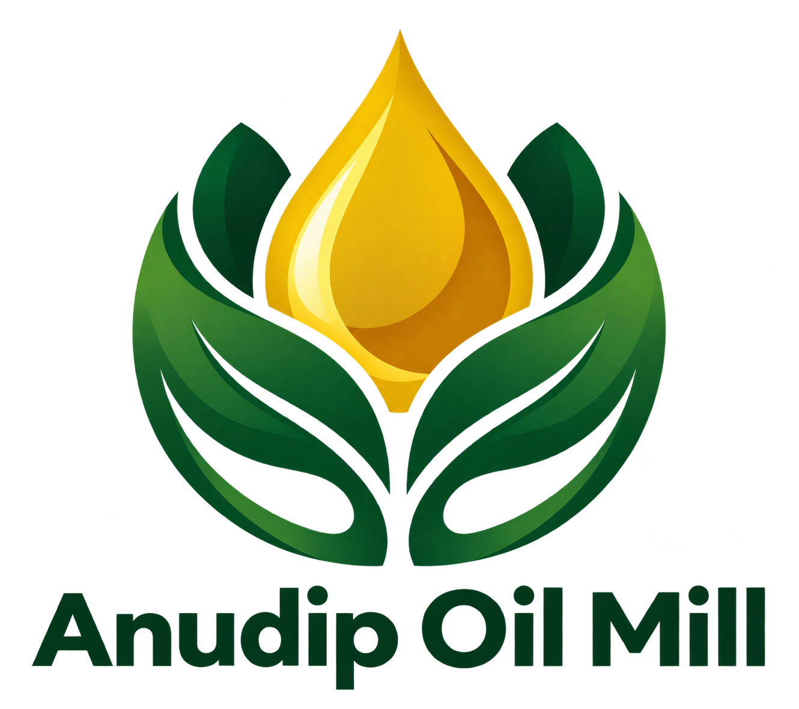

Anudip Oil MillDedicated to bringing 100% natural, traditionally extracted cold-pressed oils straight from seed to your kitchen.
Our seeds undergo authentic wood-pressed (Mara Chekku) extraction below 45°C, preserving natural vitamins, vital nutrients, and genuine seed aroma without chemical refining or heat damage.
Anudip Oil Mill,
Bengaluru, Karnataka,
India
+91 98765 43210
info@anudipoilmill.com
© 2025 Anudip Oil Mill. All Rights Reserved.